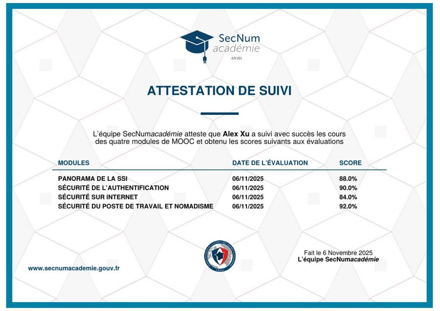

Voir l'attestationANSSI · 6 nov. 2025Télécharger le PDF
SecNumAcadémie
Le MOOC de l'Agence nationale de la sécurité des systèmes d'information : les bases de la sécurité du numérique, en quatre modules évalués.
88,5 %moyenne sur 4 modules
Voir le détail des scores
- Panorama de la SSI88 %
- Sécurité de l'authentification90 %
- Sécurité sur Internet84 %
- Sécurité du poste de travail et nomadisme92 %